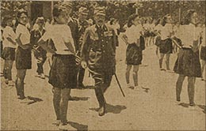

|
j
a v a s c r i p t |
May 7, 1943
Tribune: "Premier ... reiterates pledge of freedom in shortest possible time but urges P.I. to show more active, unreserved cooperation." Tojo distributed gifts too: P100,000 for the poor, P10,000 for the Constabulary, one ton of quinine, and a cloisonné vase. (The money is just printed and the quinine comes from Java — the vase was something.) The press did its utmost to deify him, reporting his every act, gesture, word, or breath.

Tojo Walks †
He stepped into a military bus carrying some girls to work ... they blushed ... they bowed. He spoke kind words. When [he] left the bus, he had earned their admiration and friendship.... He conversed with Filipino vendors of nuts and fruits ... peeked into several baskets.... Walking back, he lit a cigarette, and spotting a coconut tree, asked a companion, 'Can you climb this?' At 1700, an overworked Vargas will have to make another speech for the fall of Corregidor parade. The city is plastered with the appropriate Japanese posters and slogans. † "Filipino young woman teachers doing their radio taiso" — Normal Institute. |
|
|
|
|